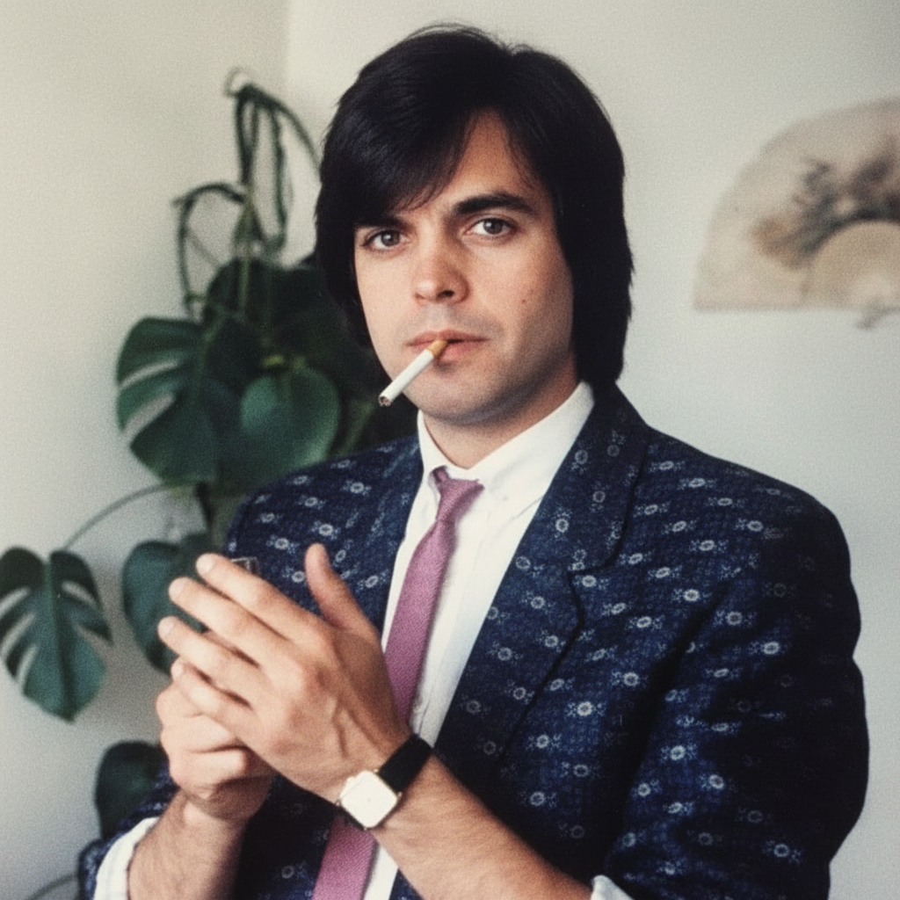

Juan Manuel Gonzalez
Juan Manuel Gonzalez is the legend of the Canary Islands having worked with Julio Inglesias in the late 70’s and early 80’s. He has been a professional musician for many years, and is the first guitarist that Memz ever saw playing live in 1980, and is still a lifelong family friend. When Memz began his Sound Engineering diploma program at Alchemea in 2008, he called on Juan to produce a number of tracks at the studio facilities, which makes him the first artist that Memz was the sound engineer for. Using a Telefunken vintage U47 to capture his powerful voice with the SSL G Series mic preamps into Pro Tools. He tracked to guide midi files on an old Yamaha Karaoke keyboard which never sounded as good as it needed to. Memz has held back the production until the technology was available to get the job done. He is currently working on the production, and the licensing needed to release the collection. As soon as the red tape is cleared, we shall see the results of the labour. We are proud to be releasing him on the Flave R Soul Español imprint… To be continued… Flave R Soul Records ©️